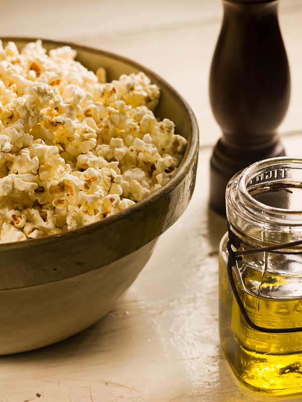

Amy's Famous EVOO-corn

EVOO corn
Yes, this is popcorn. But not just any popcorn; it's EVOO corn. This small change makes a huge difference in flavor. I encourage you to give
it a try over your normal buttered popcorn.
Ingredients
- 2 tbsp of oil
- 1/2 cup of popcorn kernels
- 2 tbsp of the best EVOO you can find
Steps
- Heat oil in a tall pot (the kernels will fly)
- Once oil is up to temp, add enough kernels to cover the bottom of the pot
- Keep lid partially on while kernels pop
- Shake every so often to ensure popped kernels won't stick to the bottom of the pot and burn
- Transfer popcorn to a large bowl and drizzle with EVOO
- Enjoy!